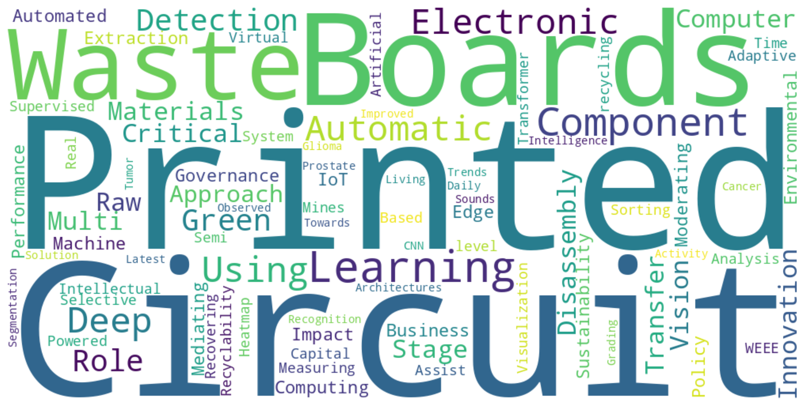

Dr. Muhammad Mohsin

Muhammad Mohsin is a Research Fellow at the DIBRIS, University of Genoa, Italy. He received the PhD degree in Computer Science from the University of Genoa, Italy. His research interests include Machine Learning, Deep Learning, Computer Vision, Medical Imaging Analysis, Pattern Recognition, Generative AI, Natural Language Processing. He is also actively engaged in applying Artificial Intelligence to Urban Mining, Electronic Waste Recycling, Circular Economy, and Green Innovation. He is also a member of the IEEE Computer Society.
Office: DIBRIS, University of Genoa, Via Dodecaneso 35, Genoa, 16146, Italy GenoaEmail: muhammad.mohsin@edu.unige.it
"The important thing is not to stop questioning. Curiosity has its own reason for existing."
— Albert Einstein

Education
PhD in Computer Science
University of Genoa
Department of Informatics, Bioengineering, Robotics and Systems Engineering (DIBRIS),
Via Dodecaneso 35, Genoa, Italy.
01/2022 – 05/2025
Thesis Title: Deep Learning-Powered Computer Vision System for Selective Disassembly of Waste Printed Circuit Boards
Thesis Advisor:
- Francesco Masulli, University of Genoa (UNIGE), Italy
- Stefano Rovetta, University of Genoa (UNIGE), Italy
Thesis Reviewer:
- Xianlai Zeng, Tsinghua University, Beijing, China
- Corrado Mencar, University of Bari Aldo Moro (UniBa), Italy
Masters of Science in Computer Engineering
National University of Sciences and Technology
10/2017 – 05/2021
Thesis Title: Automatic Prostate Cancer Grading Using Deep Architectures
Thesis Advisor:
- Arslan Shaukat, National University of Sciences and Technology (NUST), Islamabad, Pakistan
- Usman Akram, National University of Sciences and Technology (NUST), Islamabad, Pakistan
Bachelor of Science in Computer Engineering
University of Engineering and Technology (UET), Taxila
Taxila, Pakistan.
09/2013 – 07/2017
Thesis Title: Intelligent Monitoring Robot for Navigation and Assistance
Thesis Advisor:
- Muhammad Majid, University of Engineering and Technology (UET), Taxila, Pakistan
- Dr. Aasim Raheel, University of Engineering and Technology (UET), Taxila, Pakistan
Experience
Research Fellow
University of Genoa
Department of Informatics, Bioengineering, Robotics and Systems Engineering (DIBRIS),
Via Dodecaneso 35, Genoa, Italy.
01/2025 - Present
Responsibilities:
- Working on a research project focused on advancing Artificial Intelligence technologies for circular economy by reusing and treatment of electronic waste
- Design and development of AI applications for industrial environment for automatic disassembly and sorting of electronic waste.
- Exploring ICT technologies helps to automate the recycling process of electronic waste.
Consultant
Vega Research Laboratories (VRLabs)
Disruptive Technologies for the Industry, the City and the Heathcare
Via Fieschi 9 - 16121 Genoa, Italy.
01/2022 - Present
Responsibilities:
- Working with different industrial projects focused on AI-powered technology research and developement.
- Completed a 12-month industry placement as part of a collaborative PhD program with the University of Genoa.
- Conducted applied research on AI-based solutions for automatic disassembly and sorting of electronic waste.
- Developed and optimized computer vision models for detection and classification of components on waste PCBs.
- Worked closely with Vega’s R&D and engineering teams to align academic research with real-world industrial needs.
- Contributed to the development of recycling technologies aimed at recovering critical raw materials from e-waste.
- Supported integration and validation of AI models in semi-automated disassembly systems within an industrial setting.
PhD Researcher
University of Genoa
Department of Informatics, Bioengineering, Robotics and Systems Engineering (DIBRIS),
Via Dodecaneso 35, Genoa, Italy.
01/2022 - 05/2025
Responsibilities:
- Completed a research project focused on advancing Artificial Intelligence-based techniques for recovery of critical raw materials from e-waste using circular economy principles
- Developed custom dataset to assist automatic disassembly and sorting of waste PCBs.
- Designed and developed Computer Vision-based models for automatic selective disassembly of waste PCBs.
- Actively participated in and organized the PhD seminar series and workshops at DIBRIS, University of Genoa, Italy.
- Visited the World Artificial Intelligence Cannes Festival (WAICF 2023) held in Cannes, France to learn about the latest advancements in AI-based innovative technologies.
Visiting PhD Researcher
Tsinghua University
School of Environment
Beijing, China.
12/2024 - 05/2025
Responsibilities:
- Collaborated with experts in e-waste recycling and circular economy at The School of Environment, Tsinghua University, Beijing, China.
- Performed data collection and experiments in the Key State Laboratory of the School of Environment for elemental analysis of waste PCBs to assist automatic disassembly systems.
- Developed multi-criteria algorithms based on innovative methods to measure the recyclability of electronic components present on waste circuit boards.
- Participated in seminar series focused on the recent status of e-waste and possible solutions for efficient recovery of high-value materials.
- Visited a waste PCB recycling plant in Zhengzhou, China to explore the latest technology used for the recovery of precious metals and other critical raw materials.
- Attended and presented a research paper on multi-criteria recyclability measurement of electronic components at “The 19th International Conference on Solid Waste Management and Technology” (ICWMT19) held in Hangzhou, China.
Research Assistant
National University of Sciences & Technology (NUST)
College of Electrical and Mechanical Engineering (CEME),
Islamabad, Pakistan.
08/2019 - 07/2021
Responsibilities:
- Conducted research and worked on projects related to medical imaging analysis using tools such as Google Colab, PyCharm, Jupyter Notebook, Anaconda, MATLAB, and Python.
- Documented the research work and publications.
- Created progress reports of projects in the English language.
- Published the research work in international conferences.
- Research work was selected for presentation at JEJU National University, South Korea.
Machine Learning Expert (Freelance)
Fiverr and Upwork
International Freelance Marketplace.
02/2017 - Present
Responsibilities:
- Designed various classification and segmentation models using machine learning and deep learning techniques.
- Completed over 200 projects with total earnings exceeding $10,000.
- Provided regular academic assistance to international students in courses including pattern analysis, machine learning, deep learning, image processing, and Python programming.
- Delivered projects using multiple programming languages and tools including C++, Python, MySQL, HTML, CSS, and JavaScript.
Internee Engineer
National Telecommunication Corporation (NTC)
Multan, Pakistan.
07/2016 - 08/2016
Responsibilities:
- Worked with NTC, the official Telecom/ICT service provider to the government of Pakistan.
- Gained practical experience in basic switching concepts and smart data network techniques for improved wireless connectivity.
- Visited the server room and observed the operation of switching techniques and the power system infrastructure.
Research Activities
Research Publications
Journal Articles
- Muhammad Mohsin, Stefano Rovetta, Francesco Masulli, Alberto Cabri (2025). Artificial Intelligence Approach for Waste-Printed Circuit Board Recycling: A Systematic Review. Computers. DOI:10.3390/computers14080304
- Muhammad Mohsin, Stefano Rovetta, Francesco Masulli, Alberto Cabri (2025). Extraction of Critical Raw Materials from Waste Printed Circuit Boards Using Machine Learning and Computer Vision. DOI:10.36227/techrxiv.174494586.62661948
- Muhammad Mohsin, Stefano Rovetta, Francesco Masulli, Alberto Cabri (2025). Automated Disassembly of Waste Printed Circuit Boards: The Role of Edge Computing and IoT. Computers. DOI:10.3390/computers14020062
- Fatima Batool, Muhammad Mohsin, Belal Mahmoud Alwadi (2025). Green Innovation and Environmental Performance: The Moderating Roles of Governance and Policy. World. 10.3390/world6010029
- Fatima Batool, Muhammad Mohsin (2024). Impact of Green Innovation on Business Sustainability and the Mediating Role of Green Intellectual Capital. Educational Administration: Theory and Practice, 30(4). DOI:10.5281/zenodo.12345678
Conference Proceedings
- Muhammad Mohsin, Stefano Rovetta, Francesco Masulli, Alberto Cabri (2025). Valorization of Waste Electrical and Electronic Equipment: Integrating AI into Sustainable WEEE Management (In Press).
- Muhammad Mohsin, Stefano Rovetta, Francesco Masulli, Alberto Cabri (2025). Heatmap Visualization for Deep Learning Analysis of Waste Printed Circuit. EEE ECIS 2025 . DOI:10.1109/ECIS65594.2025.11086768
- Muhammad Mohsin, Stefano Rovetta, Francesco Masulli, Alberto Cabri (2025). Semi-Supervised Multi-Stage Transfer Learning for Electronic Component Detection (In Press).
- Muhammad Mohsin, Stefano Rovetta, Francesco Masulli, Alberto Cabri (2025). Adaptive Multi-Stage Transfer Learning Approach for Electronic Component Detection in Waste Printed Circuit Boards. ICASET 2025, Ibn Tofail University (Higher School of Technology), Kenitra, Morocco. DOI:10.1007/978-3-031-98334-4_13
- Muhammad Mohsin, Stefano Rovetta, Francesco Masulli, Alberto Cabri (2024). Real-Time Detection of Electronic Components in Waste Printed Circuit Boards: A Transformer-Based Approach. ApplePies Conference, Polytechnic University of Turin. DOI:10.1007/978-3-031-84100-2_21
- Muhammad Mohsin, Francesco Masulli, Stefano Rovetta, Danilo Greco, Alberto Cabri (2024). Deep Learning-Powered Computer Vision System for Selective Disassembly of Waste Printed Circuit Boards. IEEE RTSI, Politecnico di Milano. DOI:10.1109/RTSI61910.2024.10761364
- Muhammad Mohsin, Xianlai Zeng, Stefano Rovetta, Francesco Masulli (2024). Measuring the Recyclability of Electronic Components to Assist Automatic and Sorting Waste Printed Circuit Boards. ICWMT19, Hangzhou, China. DOI:10.13140/RG.2.2.12345.67890
- Muhammad Mohsin, Francesco Masulli, Stefano Rovetta, Alberto Cabri (2023). Virtual Mines – Component-level recycling of printed circuit boards using deep learning. WIRN 2023, Vietri sul Mare, Italy. DOI:10.1007/978-981-96-0994-9_4
- Alberto Cabri, Francesco Masulli, Stefano Rovetta, Muhammad Mohsin (2022). Recovering Critical Raw Materials from WEEE using Artificial Intelligence. MAS2022, Rome, Italy. DOI:10.1234/5678.91011
- Muhammad Mohsin, Arslan Shaukat, Usman Akram, Muhammad Kaab Zarrar (2021). Automatic Prostate Cancer Grading Using Deep Architectures. IEEE AICCSA 2021. DOI:10.1109/AICCSA53542.2021.9686869
- Muhammad Kaab Zarrar, Farhan Hussain, Muhammad Mohsin, Rida Sheikh (2019). Latest Trends in Automatic Glioma Tumor Segmentation and Improved CNN Solution. MACS 2019. DOI:10.1109/MACS48846.2019.9024815
- Arslan Shaukat, Ammar Younis, Usman Akram, Muhammad Mohsin, Zartasha Mustansar (2019). Towards Automatic Recognition of Sounds Observed in Daily Living Activity. IEEE ICCI*CC 2019. DOI:10.1109/ICCI-CC.2019.9146067
Patents
- Francesco Masulli, Muhammad Mohsin, Stefano Rovetta and Alberto Cabri (2025).V-PCB DEMO AND DATASET, Numero registrazione: D000026014, Data pubblicazione: 2025-05-30 Nazione pubblicazione: ITALIA, filed 01/08/2025, granted 30/05/2025
Courses
2025-2026
- Introduction to Computer Science and Programming (BSc Computer Engineering)
- Data Warehousing (MSc Computer Science)
- Fondamenti di Ingengneria del Software (BSc Computer Engineering)
- Data Visualization (MSc Computer Science)
- Advance Data Management (MSc Computer Science)
2024-2025
- Introduction to Computer Science and Programming (BSc Computer Engineering)
- Data Warehousing (MSc Computer Science)
Academic Services
Invited Talks
- Valorization of Waste Electrical and Electronic Equipment: Integrating AI into Sustainable WEEE Management – Invited Speaker at the 4th Global Summit on Artificial Intelligence (GSAI 2025), 10th & 11th of June 2025 (Online).
Seminars
- Selective Disassembly of Electronic Components from WEEE using Artificial Intelligence – PDF
- Virtual Mines: A sustainable solution for the electronic industry – PDF
- Measuring the recyclability of waste electronic components in printed circuit boards – PDF
- CINECA High-Performance Computing System: Leonardo
Posters Presentations
- Selective Disassembly of Electronic Components from WEEE using Artificial Intelligence – PDF
- V-PCB Dataset: Detection of Electronic Components in Waste from Electrical and Electronic Equipment – PDF
- Assessing Recyclability for Automated Waste PCB Disassembly and Sorting – PDF
Peer Review Activities
- Peer Reviewer PLOS One , 2025–Present
- Reviewer at a ICIVIS 2025 The 5th International Conference on Image, Vision and Intelligent Systems (ICIVIS), May 23-25, 2025 – Hangzhou, China.
- Reviewer at a NeurIPS 2024 Workshop on Algorithmic Fairness through the Lens of Metrics and Evaluation (AFME), December 14, 2024 – Vancouver Convention Center, British Columbia, Canada.
- Reviewed conference paper for the Ninth International Conference on Optimization and Applications (ICOA 2023), October 5–6, 2023 – Abu Dhabi, UAE.
Other Activities
- Editorial & Advisory Board AI & Sustainable Finance Journal (AISFJ) , 2025–Present
- Program Committee Member at the Tenth International Conference on Advances in Computation, Communications and Services (ACCSE 2025), April 06–10, 2025 – Valencia, Spain.
- Program Committee Member at the Asia Conference on Unmanned Systems and Intelligent Control (USIC 2025), November 07-09, 2025 – Hong Kong, China.
- Program Committee Member at the Ninth International Conference on Advances in Computation, Communications and Services (ACCSE 2024), April 14–18, 2024 – Venice, Italy.
- Program Committee Member at the Eighth International Conference on Advances in Computation, Communications and Services (ACCSE 2023), June 26–30, 2023 – Nice, France.
- Student Committee Member at the Eighth International Conference on Optimization and Applications (ICOA 2022), October 6–7, 2022 – Sestri Levante, Italy.
Events
Summer Schools/Courses
- Machine Learning: A Computational Intelligence Approach (MLCI 2022)
- Machine Learning Crash Course (MLCC 2022) – MaLGa, University of Genoa
- Deep Learning: Hands-on Introduction (DL 2022) – MaLGa, University of Genoa
- Computer Vision Crash Course (CVCC 2022) – MaLGa, University of Genoa
- High Performance Computing (HPC 2022)
- Paper Writing
- Effective Habits and Skills for Successful Young Researchers (EHSSYR 2023)
- Trustworthy Artificial Intelligence (TIA 2023)
- Data Science Summer School (DS3 2023) – Hertie School, Germany
- Signal Processing for Autonomous Systems – University of Genoa
Online Courses | Coursera
- Introduction to Docker: The Basics
- Linear Algebra for Machine Learning and Data Science
- Data Visualization with Python
- Docker for Absolute Beginners
- AI for Everyone
- Understanding Research Methods
- Utilized LinkedIn for Career Search
Conferences and Expo
- ECOMONDO - The Green Technology Expo 2024, November 4–8, 2024 – Rimini, Italy.
- IEEE 8th Forum on Research and Technologies for Society and Industry (RTSI 2024), Politecnico di Milano, Italy.
- International Conference on Applications in Electronics Pervading Industry, Environment and Society (ApplePies 2024), Polytechnic University of Turin
- World Artificial Intelligence Cannes Festival (WAICF 2023), February 9–11, 2024 – Cannes, France
- ICWMT19, Hangzhou, China
- The Italian Workshop on Neural Networks (WIRN 2023) , Vietri sul Mare, Italy
Continuing Professional Development Program | Pakistan Engineering Council (CPED 3.5)
- Entrepreneurship Development by Managing Technology Innovation in Water and Wastewater Treatment Projects
- Self-Discovery with Talent Management: Achieving Excellence in Your Professional Career
- Indigenous Entrepreneurship: Characteristics, Cases, and Stories